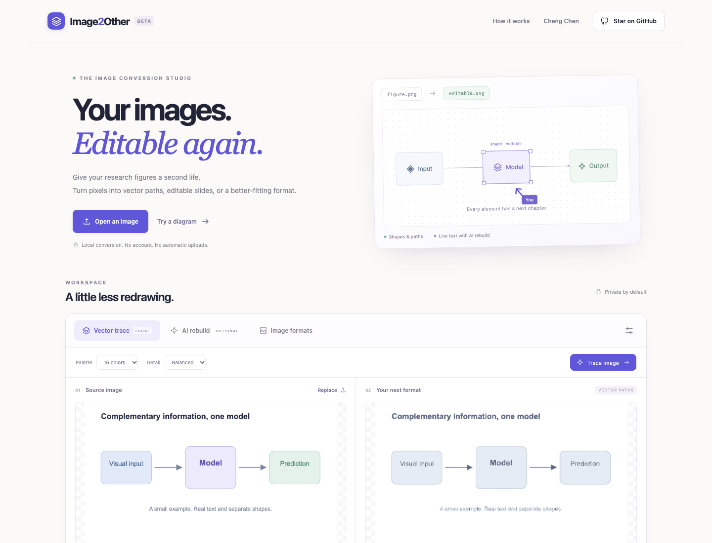

Read the text
OCR proposes words and locations. People review the labels before glyph pixels are replaced by native SVG/PPTX text.
Recover editable text, vector shapes, and connections from a flat image—then test whether a local edit preserves the rest of the figure.
Research project page · no paper or quantitative results released yet.
Concept illustration · not a measured reconstruction result
THE RESEARCH QUESTION
Scientific figures are often available only as flattened images, making even a small revision difficult. Existing conversion workflows may recover visual similarity while leaving labels, shapes, and connections hard to edit independently. We study a stricter reconstruction goal: an editable scene whose text is legible, whose relationships remain valid after a local change, and whose untouched regions stay stable. Our current prototype combines reviewed OCR suggestions, vector tracing, scene-level editing, and render–compare feedback. These components define an engineering baseline and a candidate evaluation protocol; they do not yet establish a new trained method or measured research result.
01 / PROBLEM
A regenerated figure can look convincing yet fail the first time someone edits a label, moves a module, or checks where an arrow points. We are interested in a stricter goal: reconstruct a figure that stays coherent after a local change, without disturbing unrelated regions.
That shifts the target from pure pixel imitation toward recoverable structure, legible text, and measurable edit behavior.
02 / APPROACH
The engineering prototype exposes each layer so errors can be found, corrected, and eventually studied—not hidden behind a single export button.
OCR proposes words and locations. People review the labels before glyph pixels are replaced by native SVG/PPTX text.
Raster regions are traced into vector paths; a scene editor also supports explicit shapes, lines, and anchor targets.
The exported scene is rendered back to pixels and compared with the source. A bounded local position search can reduce image error for selected layers.
Future experiments will test whether local edits preserve text, connections, and untouched regions—and whether a compact model improves reconstruction decisions.
THE ENGINEERING PROTOTYPE
Upload a figure, review OCR suggestions, protect graphic regions during text replacement, trace artwork, edit the scene, and export SVG or PowerPoint. The live tool also contains separate image and document converters.
Open the interactive demoThis screenshot shows the running browser tool; its output quality varies with the input and requires review.

03 / EVALUATION PLAN
A candidate benchmark would pair source figures with verified structures and controlled edit tasks. These are evaluation axes, not published results.
Render the rebuilt figure and compare it with the source, including local difference maps.
Check recognized labels, formulas, and their attachment to the right visual region.
Test whether arrows and connectors retain the intended source and target after a component moves.
Quantify unwanted changes outside the region deliberately edited by a user.
04 / RELEASE STATUS
Available now
Browser converter, editable SVG/PPTX export, reviewed text workflow, and a local optional PaddleOCR bridge.
Not yet released
No trained model weights or benchmark dataset have been released. A paper and controlled evaluation are still in progress.
Current limits
Fonts and semantics are approximate; equations, handwriting, rotated labels, and automatically inferred connections remain difficult.
PROJECT RESOURCES
The code, interactive demo, and development notes are public. Failure cases and carefully verified edits will guide the next stage of research.